4 sola
4/20｜2026/08/01
3EXXV
多了哪些牌
 +3
+3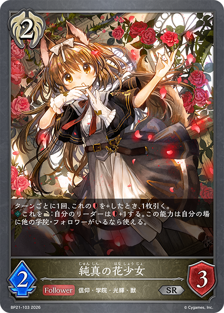
+3 +3
+3 +2
+2 +2
+2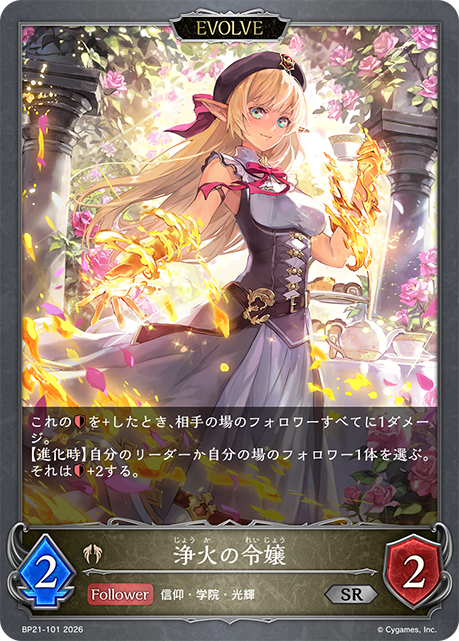
+1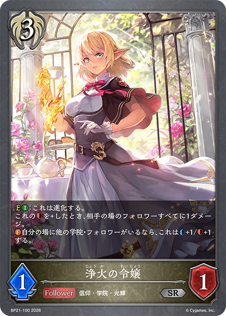
+1 +1
+1 +1
+1少了哪些牌
-3 -3
-3 -3
-3 -3-2
-3-2 -2-1
-2-1
-3-3-3-2-2-1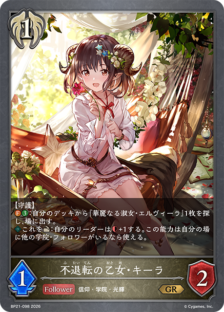
主BP21-098/BP21-P51：不退転の乙女・キーラ主卡组 × 3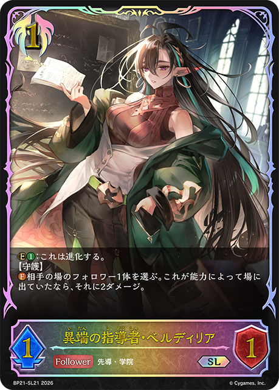
主BP21-091/BP21-SL21：異端の指導者・ベルディリア主卡组 × 3主CP03-115/CP03-P79：三日月の女神 ツクヨミ主卡组 × 3主ECP01-053/ECP01-P29：〔月下の悪魔ちゃん♪〕メジロパーマー主卡组 × 1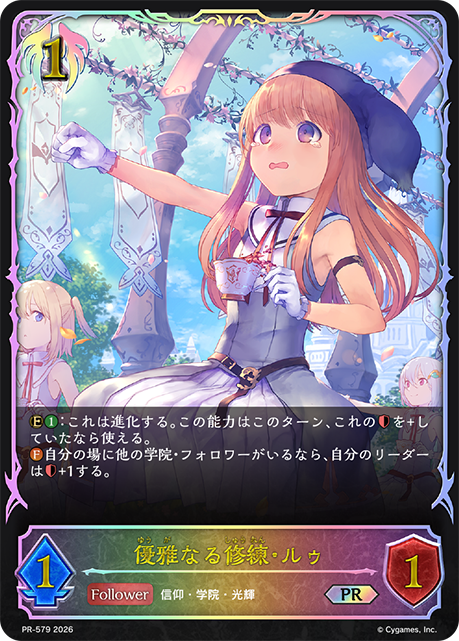
主BP21-096/PR-579：優雅なる修練・ルゥ主卡组 × 3 主BP21-114/PR-582：大いなる学び舎主卡组 × 3主BP21-115/PR-584：スマートゴブリン主卡组 × 2主BP13-088/BP13-SL18：絶望の聖女・ジャンヌ主卡组 × 3主BP16-103/BP16-P23：煌翼のフェザーフォルク・リノ主卡组 × 3
主BP21-114/PR-582：大いなる学び舎主卡组 × 3主BP21-115/PR-584：スマートゴブリン主卡组 × 2主BP13-088/BP13-SL18：絶望の聖女・ジャンヌ主卡组 × 3主BP16-103/BP16-P23：煌翼のフェザーフォルク・リノ主卡组 × 3 主BP13-091/PR-415：ルナールの聖騎士主卡组 × 3
主BP13-091/PR-415：ルナールの聖騎士主卡组 × 3 主BP21-113/PR-565：煌奏の学徒・アンリエット主卡组 × 3主SP01-045/SP01-SL45/SP01-SP31/SP01-U28：不思議な青空・アリス主卡组 × 2
主BP21-113/PR-565：煌奏の学徒・アンリエット主卡组 × 3主SP01-045/SP01-SL45/SP01-SP31/SP01-U28：不思議な青空・アリス主卡组 × 2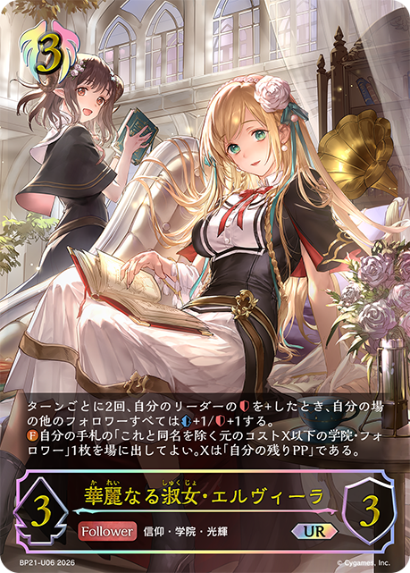
主BP21-093/BP21-U06：華麗なる淑女・エルヴィーラ主卡组 × 3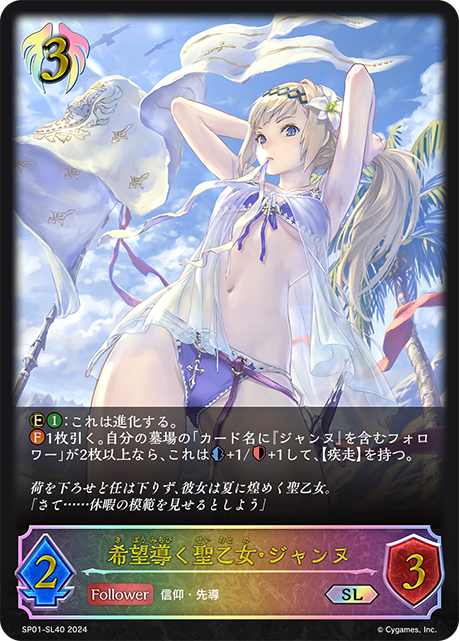
主BP09-086/SP01-SL40：希望導く聖乙女・ジャンヌ主卡组 × 3主BP21-112/BP21-SL28/BP21-U07：駆動の領域・グレティナ主卡组 × 2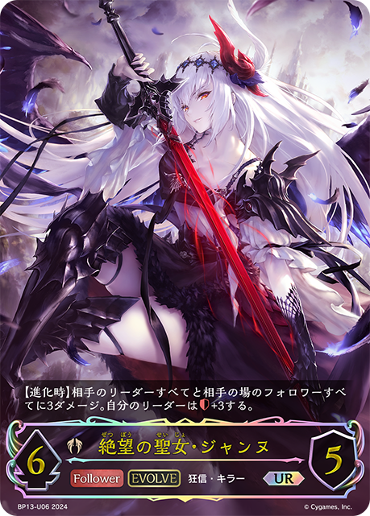
进BP13-089/BP13-U06：絶望の聖女・ジャンヌ进化 × 1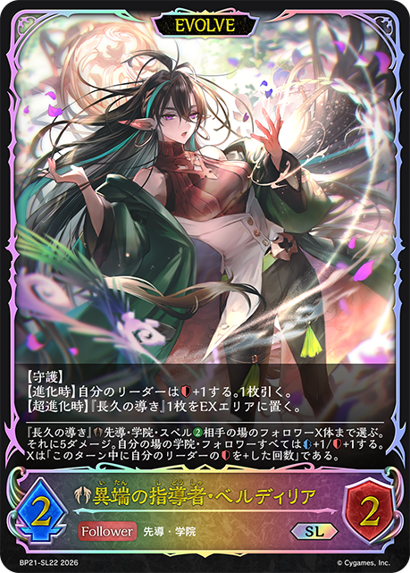
进BP21-092/BP21-SL22：異端の指導者・ベルディリア进化 × 2 进BP13-092/PR-416：ルナールの聖騎士进化 × 2
进BP13-092/PR-416：ルナールの聖騎士进化 × 2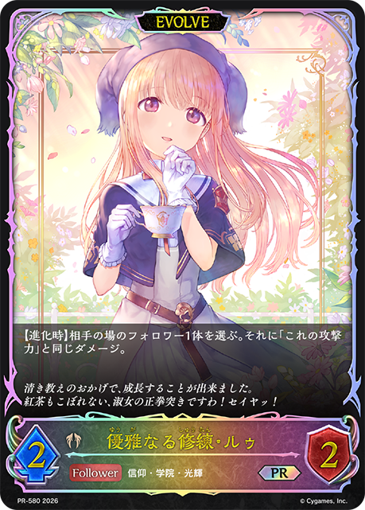
进BP21-097/PR-580：優雅なる修練・ルゥ进化 × 3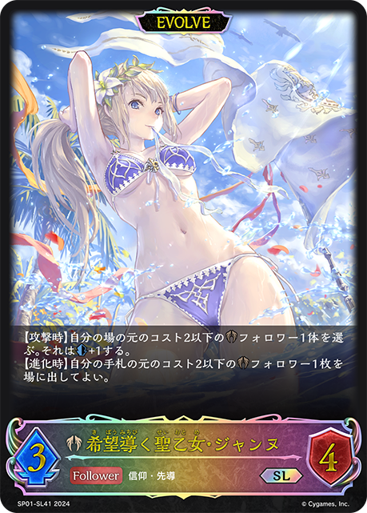
进BP09-087/SP01-SL41：希望導く聖乙女・ジャンヌ进化 × 2+3
+3+3+2+2
+1
+1+1+1-3-3-3-2-2-1+3+3+3+2 +2+1+1+1+1-3-3-3-2-2-1
+2+1+1+1+1-3-3-3-2-2-1 +3
+3 +3
+3 +3+3+3+3
+3+3+3+3 +2+2+2
+2+2+2 +2
+2 +2+1+1-3-3-3-3-3-3-2-2-2-1-1-1
+2+1+1-3-3-3-3-3-3-2-2-2-1-1-1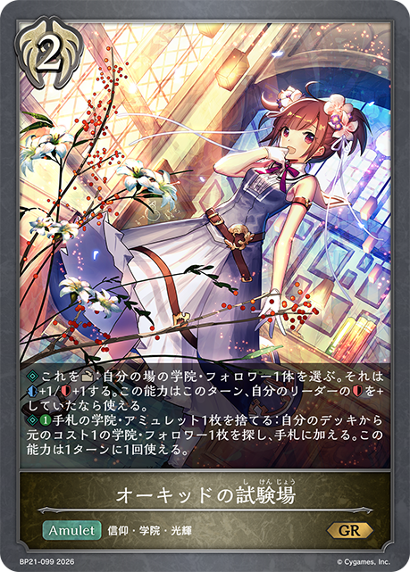
+3+3+3+3+2+2+1+1+1 +1-3-3-3-3-2-2-2-1-1+3
+1-3-3-3-3-2-2-2-1-1+3 +3+2+2
+3+2+2 +2+1+1+1-3-3-3-3-2-2-2-1-1-1
+2+1+1+1-3-3-3-3-2-2-2-1-1-1 +3
+3 +3+3+3+3
+3+3+3+3 +2+2+2+2+2+2-3-3-3-3-2-2-2-2-1-1-1-1+3+3+3+3+2+2+2
+2+2+2+2+2+2-3-3-3-3-2-2-2-2-1-1-1-1+3+3+3+3+2+2+2 +2+2+1
+2+2+1 +1+1-3-3-3-3-2-2-2-1-1-1-1
+1+1-3-3-3-3-2-2-2-1-1-1-1 +3
+3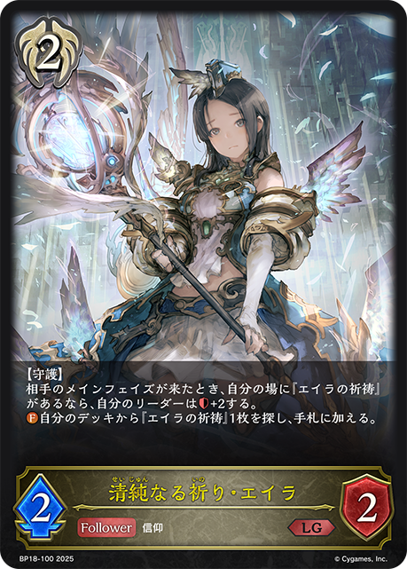
+3+3+3+2+2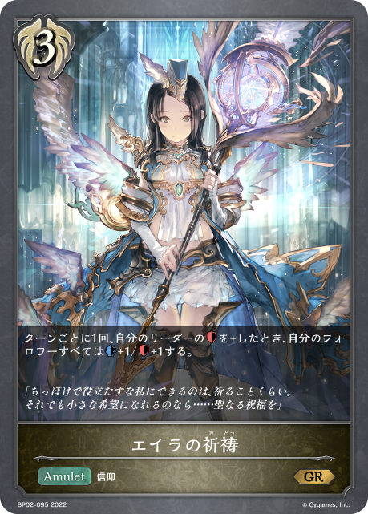
+1+1+1-3-3-3-2-2-1-1-1+2+2+1-3-2-1-1-1-1-1+3+3+3+3+3+2+2+2+1-3-3-3-3-2-2-2-1-1-1-1| 图片 | 平均张数 | 使用率 | 携带最好成绩 | 不携带最好成绩 | 1张比例 | 2张比例 | 3张比例 |
|---|---|---|---|---|---|---|---|
| 3.00 | 100.0% | 3 3/371976KJ |
无 | 0.0% | 0.0% | 100.0% | |
| 3.00 | 100.0% | 3 3/371976KJ |
无 | 0.0% | 0.0% | 100.0% | |
| 3.00 | 100.0% | 3 3/371976KJ |
无 | 0.0% | 0.0% | 100.0% | |
| 3.00 | 100.0% | 3 3/371976KJ |
无 | 0.0% | 0.0% | 100.0% | |
|
2.36 | 100.0% | 3 3/371976KJ |
无 | 27.3% | 9.1% | 63.6% |
|
2.73 | 90.9% | 3 3/371976KJ |
1 1/4GTYPE |
0.0% | 0.0% | 90.9% |
|
2.64 | 90.9% | 3 3/371976KJ |
1 1/4GTYPE |
0.0% | 9.1% | 81.8% |
| 2.36 | 90.9% | 4 4/203EXXV |
3 3/371976KJ |
18.2% | 0.0% | 72.7% | |
|
2.27 | 90.9% | 3 3/371976KJ |
8 8/184PSRD |
0.0% | 45.5% | 45.5% |
|
2.45 | 81.8% | 4 4/203EXXV |
3 3/371976KJ |
0.0% | 0.0% | 81.8% |
| 2.36 | 81.8% | 4 4/203EXXV |
3 3/371976KJ |
0.0% | 9.1% | 72.7% | |
|
1.36 | 45.5% | 3 3/371976KJ |
1 1/4GTYPE |
0.0% | 0.0% | 45.5% |
|
0.91 | 45.5% | 1 1/4GTYPE |
3 3/371976KJ |
0.0% | 45.5% | 0.0% |
| 1.00 | 36.4% | 4 4/162M7M9 |
3 3/371976KJ |
0.0% | 9.1% | 27.3% | |
|
0.73 | 36.4% | 1 1/4GTYPE |
3 3/371976KJ |
9.1% | 18.2% | 9.1% |
|
0.73 | 27.3% | 4 4/203EXXV |
3 3/371976KJ |
0.0% | 9.1% | 18.2% |
|
0.64 | 27.3% | 1 1/4GTYPE |
3 3/371976KJ |
0.0% | 18.2% | 9.1% |
|
0.45 | 27.3% | 3 3/371976KJ |
1 1/4GTYPE |
18.2% | 0.0% | 9.1% |
| 0.55 | 18.2% | 3 3/371976KJ |
4 4/203EXXV |
0.0% | 0.0% | 18.2% | |
|
0.55 | 18.2% | 8 8/184PSRD |
3 3/371976KJ |
0.0% | 0.0% | 18.2% |
|
0.55 | 18.2% | 3 3/371976KJ |
4 4/203EXXV |
0.0% | 0.0% | 18.2% |
|
0.45 | 18.2% | 8 8/184PSRD |
3 3/371976KJ |
0.0% | 9.1% | 9.1% |
|
0.45 | 18.2% | 3 3/371976KJ |
4 4/203EXXV |
0.0% | 9.1% | 9.1% |
|
0.18 | 18.2% | 4 4/162M7M9 |
3 3/371976KJ |
18.2% | 0.0% | 0.0% |
|
0.27 | 9.1% | 7 7/9LSGDW |
3 3/371976KJ |
0.0% | 0.0% | 9.1% |
|
0.27 | 9.1% | 1 1/4GTYPE |
3 3/371976KJ |
0.0% | 0.0% | 9.1% |
|
0.27 | 9.1% | 1 1/4GTYPE |
3 3/371976KJ |
0.0% | 0.0% | 9.1% |
| 0.27 | 9.1% | 7 7/9LSGDW |
3 3/371976KJ |
0.0% | 0.0% | 9.1% | |
|
0.27 | 9.1% | 3 3/371976KJ |
4 4/203EXXV |
0.0% | 0.0% | 9.1% |
|
0.27 | 9.1% | 7 7/286TAFM |
3 3/371976KJ |
0.0% | 0.0% | 9.1% |
|
0.18 | 9.1% | 8 8/134CAFZ |
3 3/371976KJ |
0.0% | 9.1% | 0.0% |
|
0.18 | 9.1% | 6 6/304D8SB |
3 3/371976KJ |
0.0% | 9.1% | 0.0% |
|
0.18 | 9.1% | 3 3/371976KJ |
4 4/203EXXV |
0.0% | 9.1% | 0.0% |
| 0.09 | 9.1% | 7 7/9LSGDW |
3 3/371976KJ |
9.1% | 0.0% | 0.0% |
| 图片 | 平均张数 | 使用率 | 携带最好成绩 | 不携带最好成绩 | 1张比例 | 2张比例 | 3张比例 |
|---|---|---|---|---|---|---|---|
| 2.36 | 100.0% | 3 3/371976KJ |
无 | 0.0% | 63.6% | 36.4% | |
| 2.18 | 100.0% | 3 3/371976KJ |
无 | 0.0% | 81.8% | 18.2% | |
| 1.82 | 90.9% | 4 4/203EXXV |
3 3/371976KJ |
18.2% | 54.5% | 18.2% | |
|
1.55 | 81.8% | 4 4/203EXXV |
3 3/371976KJ |
9.1% | 72.7% | 0.0% |
|
0.91 | 45.5% | 3 3/371976KJ |
1 1/4GTYPE |
0.0% | 45.5% | 0.0% |
| 0.36 | 18.2% | 3 3/371976KJ |
4 4/203EXXV |
0.0% | 18.2% | 0.0% | |
|
0.27 | 18.2% | 8 8/184PSRD |
3 3/371976KJ |
9.1% | 9.1% | 0.0% |
|
0.18 | 9.1% | 1 1/4GTYPE |
3 3/371976KJ |
0.0% | 9.1% | 0.0% |
|
0.18 | 9.1% | 7 7/286TAFM |
3 3/371976KJ |
0.0% | 9.1% | 0.0% |
| 0.09 | 9.1% | 3 3/371976KJ |
4 4/203EXXV |
9.1% | 0.0% | 0.0% | |
|
0.09 | 9.1% | 8 8/134CAFZ |
3 3/371976KJ |
9.1% | 0.0% | 0.0% |